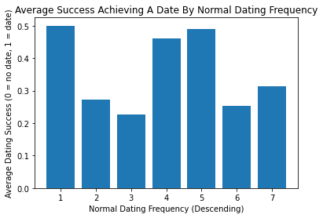

Normal Frequency of Dating vs Success In Achieving A Date

This plot shows average success in dating on a 0-1 scale,
with the subject's normal dating frequency expressed on a
1-7 descending scale. This metric addresses familiarity with
how to secure and actualize a date, testing the hypothesis
that people who date more frequently would have more success
securing a first date. There was no correlation found, suggesting
that habit does not in itself propogate more dates.